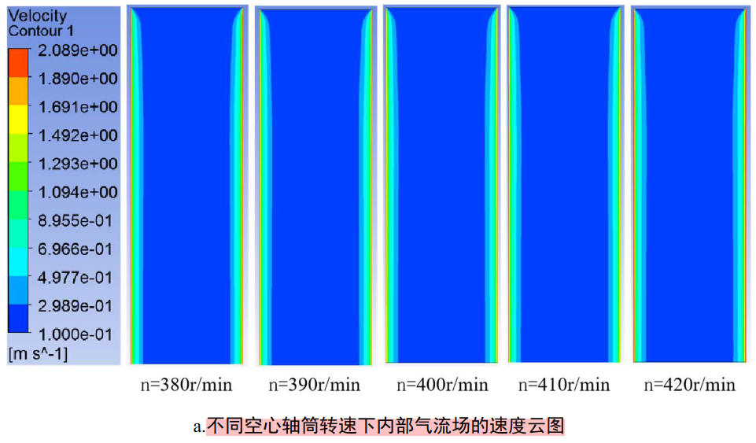

解决了矮砧果园有机肥料开沟施肥装置设计与试验_臧家俊中，有机肥堵塞的问题。
flowchart LR
中国水果的国际竞争力低-->同矮砧种植技术果品不如外国-->土壤有机质含量偏低-->果园土壤有机质含量偏低
土壤有机质含量偏低-->化学肥料的过度使用-->有机质含量影响果品-->施有机肥-->课题组先前施肥机存在堵塞问题-->解决堵塞问题
果园土壤有机质含量偏低-->有机质含量影响果品
 ——Page.21 矮砧果园有机肥料开沟施肥装置设计与试验_臧家俊图 2-7 不同空心轴筒转速下内部气流场的结果云图
2.2.3.6 空心轴筒前进速度对有机肥排肥性能的影响规律
空心轴筒运动状态下,其前进速度对有机肥排肥性能几乎没有影响。随着空心轴筒前进速度的增加,有机肥在空心轴筒内壁上的粘附量(4688、4726、4716、4657、4732)几乎没有变化。
2.2.4 传动箱空心轴筒内壁堵肥分析总结
同时，本节研究了传动箱空心轴筒运动状态下对有机肥排肥性能的影响。随着空心轴筒前进速度的增加，有机肥在空心轴筒内壁上的粘附量逐渐增多，有机肥排肥性能逐渐变差。当空心轴筒的前进速度小于0.28m/s(即1km/h)时，有机肥在筒壁上的粘附量小于空心轴筒静止状态下有机肥的粘附量;而当空心轴筒的前进速度大于0.28m/s时，有机肥在筒壁上的粘附量才有了显著的增加。这说明空心轴筒具有一定前进速度的情况下，可以减少有机肥与壁面之间的粘附作用。
——Page.35 矮砧果园有机肥料开沟施肥装置设计与试验_臧家俊
当螺旋叶片的转速大于其临界转速时，螺旋叶片转速越大，其对土壤的提升作用越强，开沟混肥器开沟前进过程中，受前方土壤阻碍作用，出肥口下方的螺旋叶片提升的土壤会阻碍出肥口排肥，进而减低了开沟混肥器的排肥速率，对开沟混肥器的排肥性能具有不利影响。因此必须对开沟混肥器的入土结构进行改进，在保证其入土性能的基础上，减小其对土壤的提升作用，进而使得开沟混肥器的有机肥排肥速率提高，从而提高开沟混肥器的有机肥排肥性能，避免发生有机肥堵肥问题。 ——Page.38 矮砧果园有机肥料开沟施肥装置设计与试验_臧家俊
将圆筒内腔设计为下方直径大，上方直径小的圆锥形。在圆筒旋转时，有机肥粒受到的来自圆筒内壁的反力就可以分解出一个向下的力。
EDEM-Fluent耦合过程是一个瞬态双向数据传递的过程。首先，利用Fluent计算一个时间步的流场信息，然后启动EDEM进行相同时间迭代，利用耦合接口将颗粒的位置、运动、体积、温度等信息传递至Fluent中，计算颗粒与流体的相互作用，流体对颗粒的作用将通过接口传递至EDEM作为颗粒体积力影响颗粒的运动，而对流体的作用通过动量源相的方式作用于流体中。逐步循环迭代，实现全过程的瞬态模拟。
通过控制变量的单因素仿真试验，确定了空心轴筒转速、直径和前进速度对有机肥粘附情况的影响规律。